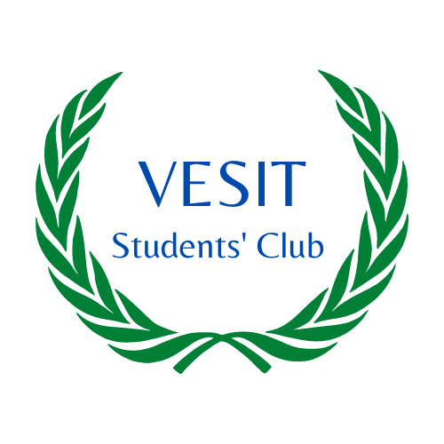
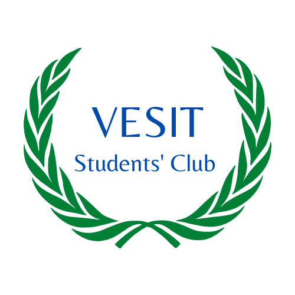

Event Name : International Yoga Day
Event Date : 21st June 2022
Event Description : The International Yoga Day was celebrated enthusiastically in Vivekanand Education Society’s Institute of Technology, Chembur on 21st June 2022. It was organized by VESIT Student’s Club an AICTE sponsored CLUB and VESIT Sports Council and was streamed online by VESIT's EBSB Council. The chief guest for the event was Ms. Manjusha Joshi, a renowned Yoga teacher. The day started with the inaugural speech by Dr. (Ms.) Geeta Ajit,(Assistant Professor, Department of Humanities & Applied Science, VESIT). Then, Ms. Manjusha Joshi instructed all the participants on different yoga asanas and urged The participants to perform them. The different yoga asanas included Kapalbhati, Naukasana, Vrikshasana and many more. The event was conducted online on Google Meet. It started at 8:30 am and its duration was 1 hour.The event had active participation in huge numbers which included various professors from different departments of VESIT and students of VESIT and participants from IMI, Bhubaneshwar. The event was concluded by the vote of thanks by Ms Kajal Jewani and a token was given by Dr. (Ms.) Geeta Ajit to Ms. Manjusha Joshi. The event ended with a group photo of all participants .
Youtube link- Yoga Day 2022 ||VESIT Students' Club|| - YouTube